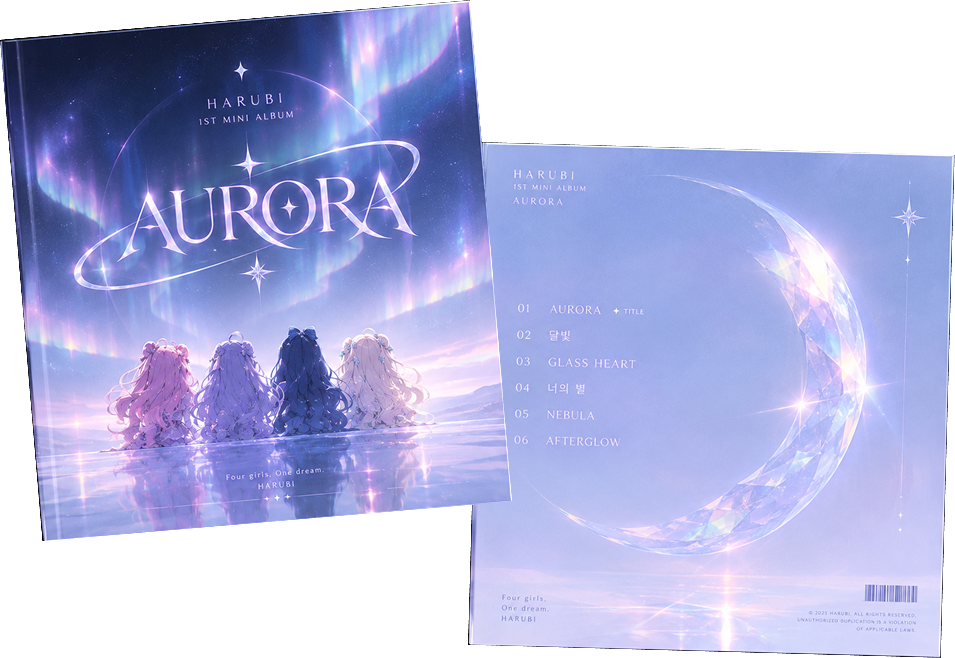

SKILL
Figma, Adobe XD, Photoshop, Illustrator, InDesign
PRODUCT
UI/UX
BRANDING
GRAPHIC DESIGN
WEB DESIGN
WEB PUBLISHING
AI CREATIVE
VIBE CODING
PARKJUEUN
SCROLL02 / ABOUT
PHONE+82 10 5737 9980
EMAILjue00111@gmail.com
Figma, Adobe XD, Photoshop, Illustrator, InDesign
HTML, CSS
SELECTED WORKS / 2026
PRODUCT
UI/UX
BRANDING
GRAPHIC DESIGN
WEB DESIGN
WEB PUBLISHING
AI CREATIVE
VIBE CODING
03 / PRODUCT UI/UX
04 / WEB DESIGN · WEB PUBLISHING
05 / AI DESIGN · BRANDING
PROJECT 01 / AI CREATIVE
AURORA — TITLE & VISUAL CONCEPT
가상 아이돌 그룹 HARUBI의 첫 번째 미니 앨범 AURORA를 위한 비주얼 콘셉트 및 앨범 디자인 프로젝트입니다.
앨범의 세계관과 비주얼 아이덴티티를 기획하고, 커버 아트워크와 캐릭터 비주얼을 제작했습니다.

06 / GRAPHIC DESIGN
eDM · 디지털 마케팅 디자인
브로슈어 · 백월 · 엑스배너 등 오프라인 마케팅 캠페인 디자인
07 / CONTACT
WEB DESIGN / PROJECT VIEW